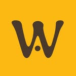
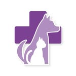
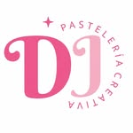
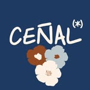
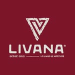

Las frases que escuchamos todas las semanas
“Facturo un montón y no veo un peso.”
Eslabón: Resultado económico“Los costos los llevo a ojo.”
Eslabón: Costos y precios“Siempre estamos al límite.”
Eslabón: Flujo de caja“Mi contador me dice que está todo bien… y yo sigo sin entender cuánto gano.”
Eslabón: Indicadores de gestiónNinguna de estas frases es inventada: son de dueños de negocios reales, en reuniones reales. Si alguna te sonó propia, el diagnóstico existe para ponerle un número a esa sensación.
Cuatro eslabones que definen la salud financiera de tu negocio
12 preguntas, tres por eslabón, sobre cómo se maneja el negocio hoy. El diagnóstico recorre la cadena completa: dónde nace la ganancia, dónde se mide, dónde se convierte en plata y cómo se usa para decidir. El eslabón más débil es el que manda, y es por donde arranca el programa.
01
Costos y precios
¿El precio deja ganancia real? ¿Cada cosa que vendés tiene su costo exacto, o el costo se calcula a ojo?
Hacer el diagnóstico · 3 min02
Resultado económico
¿Cuánto ganó el negocio el mes pasado? No cuánto facturó: cuánto quedó de verdad.
Hacer el diagnóstico · 3 min03
Flujo de caja
¿Hay plata disponible cuando hace falta? Un negocio rentable también puede quedarse sin caja.
Hacer el diagnóstico · 3 min04
Indicadores de gestión
¿Las decisiones salen de tus propios números o de la intuición? Sin indicadores, cada decisión importante es una apuesta.
Hacer el diagnóstico · 3 minAl terminar ves el puntaje del negocio sobre 36, el estado de cada eslabón y el primer paso concreto para ordenarlo. Gratis, al instante, sin planillas.
Del diagnóstico al negocio ordenado, en tres meses
El diagnóstico es el paso 1. Después, el programa trabaja con los datos del negocio: lo que se vende, lo que se compra, lo que se paga y lo que se cobra. Salís con un sistema funcionando y con tus propios números a mano, no con un informe.
01
Costos y precios
El costo real y el precio correcto de cada cosa que se vende.
02
Resultado económico
Un cierre por mes: cuánto ganó el negocio de verdad, con gastos e impuestos descontados.
03
Flujo de caja
Pagos, cobranzas y vencimientos a la vista, para que la plata esté cuando hace falta.
04
Indicadores de gestión
Tres o cuatro números que se miran todos los meses antes de decidir.
Mes 1 · Diagnóstico y base
Poner los números arriba de la mesa
Datos con los que se trabaja: ventas, compras y costos de cada producto.
- Relevamiento completo del negocio
- Armado de los costos del negocio, producto por producto
- Identificación de por dónde se escapa la rentabilidad
- Primer tablero con los números del mes
Mes 2 · Orden y sistema
Que la plata del negocio se vea y se anticipe
Datos con los que se trabaja: pagos, cobranzas, sueldos y lo que sale para la casa.
- Flujo de caja en marcha
- Separación de las finanzas personales y las del negocio
- Precio correcto de cada producto
- Rutina semanal de gestión financiera
Mes 3 · Control y autonomía
El dueño maneja sus propios números
Datos con los que se trabaja: el tablero completo del mes, comparado contra los meses anteriores.
- El dueño maneja sus propios números
- Decisiones basadas en datos reales
- Planificación de la rentabilidad futura
- Independencia total del sistema
Módulos que quedan: Hoja de ruta
Si en 90 días no sabés exactamente a dónde va a parar cada peso que factura tu negocio, seguimos trabajando sin costo hasta que lo sepas.
No es una cifra de marketing: es lo que permite sostener el acompañamiento 1 a 1, el WhatsApp directo y las sesiones mensuales de cada cliente.
Los módulos que quedan funcionando en tu negocio
Cada módulo trabaja con un dato concreto del negocio y queda en tus manos cuando termina el programa. Los nombres son provisorios.
- Registro mes a definir
- La carga de ingresos y gastos: el dato de base con el que trabaja todo lo demás.
- Resultado mes a definir
- El estado de resultados del mes: cuánto ganó el negocio de verdad, con gastos e impuestos descontados.
- Costeo mes 1 y 2
- Fichas de costo por producto, con merma incluida, y el precio que corresponde a cada uno.
- Agenda mes 2
- Vencimientos y pagos a la vista, para que ningún gasto grande agarre desprevenido al negocio.
- Insumos mes a definir
- Análisis de proveedores y compras: qué se paga, a quién y cómo cambia mes a mes.
- Tablero mes 1
- La vista visual del mes: los números que importan, de un vistazo.
- Bitácora mes a definir
- Los acuerdos y cambios de cada sesión, anotados para volver a mirarlos.
- Hoja de ruta mes 3
- El plan de los tres meses y lo que sigue después: qué decidir, cuándo y con qué número.

El Almacén del Waffle Wafflería
Hospital Veterinario Platense Veterinaria
Dulce Jazmín Pastelería
Café Ceñal CafeteríaSoberana RestaurantPuerto Arroyón ParrillaKaneman Escuela canina
Livana Resto barMollica Confitería y restaurantBurger Club HamburgueseríaNatalia Giorello PasteleríaIl Mezzogiorno RestaurantFG Hair Concept PeluqueríaUniverso Cookies CookiesPanadería Centro SAO PanaderíaCortez RestaurantBye Henry CerveceríaEl Almacén del Waffle WaffleríaHospital Veterinario Platense VeterinariaDulce Jazmín PasteleríaCafé Ceñal CafeteríaSoberana RestaurantPuerto Arroyón ParrillaKaneman Escuela caninaLivana Resto barMollica Confitería y restaurantBurger Club HamburgueseríaNatalia Giorello PasteleríaIl Mezzogiorno RestaurantFG Hair Concept PeluqueríaUniverso Cookies Cookies
Manuel Alfano
Fundador de Orden Financiero
Manuel no llegó a los números desde un escritorio: viene de más de 12 años en la gastronomía con negocio propio. Conoce de adentro lo que es cerrar el mes sin saber si quedó plata, y por eso el programa habla el idioma del dueño, no el del contador.
Hoy trabaja mano a mano con dueños de PyMEs de gastronomía, peluquerías, comercio y servicios para que el resultado del negocio deje de ser una sensación y pase a ser un número: cuánto cuesta lo que se vende, cuánto queda a fin de mes y qué decisión conviene tomar con esos datos.
El diagnóstico es el mismo punto de partida que usa con sus clientes: encontrar el eslabón más débil de la cadena financiera, porque por ahí es por donde se escapa la plata.
¿Es para vos?
El diagnóstico es para vos si…
- Tenés un negocio en marcha, con 1 a 4 locales o puntos de venta
- Tu negocio vende, pero el número de cuánto gana no está claro
- La plata personal y la del negocio están mezcladas
- Trabajás más de 10 horas por día y el negocio no te deja desconectar
- Querés tomar decisiones con datos, no con intuición
No es para vos si…
- Todavía no tenés un negocio en marcha
- Tu empresa ya tiene equipo contable y de gestión propio
- Buscás asesoría de inversiones o bolsa
Antes de empezar
¿Cuánto tarda el diagnóstico?
¿Es realmente gratis?
¿Necesito saber de finanzas para responder?
¿Qué datos me piden?
¿Qué pasa después del diagnóstico?
¿Por qué solo 3 negocios nuevos por mes?
¿Por dónde se le escapa la plata a tu negocio?
12 preguntas, 3 minutos, gratis. El paso 1 del programa.
Sin planillas · Sin compromiso